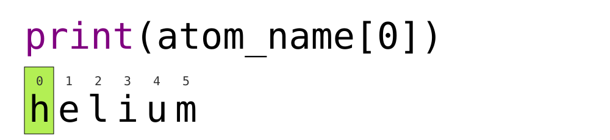
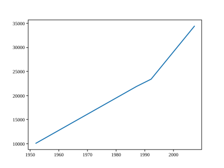
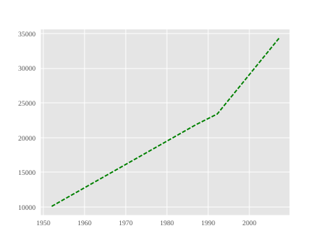
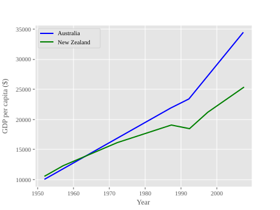
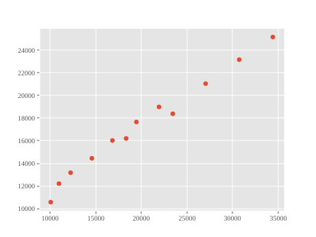
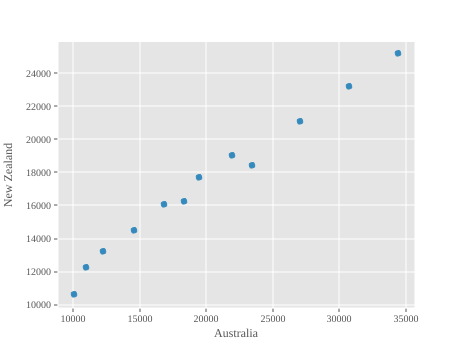

Зображення 1 з 1: ‘Рядок кода Python, print(atom_name[0]), демонструє, що використання нульового індексу виведе лише початкову літеру, у цьому випадку ‘h’ для ‘helium’.’

Рядок кода Python, print(atom_name[0]),
демонструє, що використання нульового індексу виведе лише початкову
літеру, у цьому випадку ‘h’ для ‘helium’.
Зображення 1 з 1: ‘Лінійний графік, що показує залежність позиції (км) від часу (год), використовуючи дані з наведеного вище коду. За замовчуванням графік має синю лінію на білому фоні, а вісі масштабуються автоматично відповідно до діапазону вхідних даних.’
Рисунок 2
Зображення 1 з 1: ‘Графік, що показує дані ВВП Австралії’

Рисунок 3
Зображення 1 з 1: ‘Графік ВВП для Австралії та Нової Зеландії’
Рисунок 4
Зображення 1 з 1: ‘Стовпчикова діаграма ВВП для Австралії’
Рисунок 5
Зображення 1 з 1: ‘Форматований графік ВВП для Австралії’

Рисунок 6
Зображення 1 з 1: ‘Форматований графік ВВП для Австралії та Нової Зеландії’

Рисунок 7
Зображення 1 з 1: ‘Точкова діаграма, створена за допомогою plt.scatter’

Рисунок 8
Зображення 1 з 1: ‘Точкова діаграма кореляції ВВП, побудована за допомогою data.T.plot.scatter.’

Рисунок 9
Зображення 1 з 1: ‘Рішення для графіків мінімуму та максимуму’